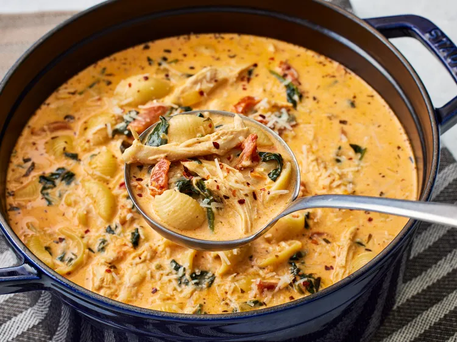

Marry Me Chicken
Home

Description
Marry Me Chicken is a rich and creamy chicken dish made with tender chicken, garlic, Parmesan cheese, sun-dried tomatoes, and Italian seasonings.
It gets its name because it’s supposedly so delicious that whoever you make it for will want to marry you!
Ingredients
- 1/2 cup drained julienne-cut sun-dried tomatoes packed in oil with herbs
- 1 tablespoon oil from sun-dried tomato jar
- 1 1/2 cups chopped yellow onion
- 4 medium garlic cloves, minced
- 3 tablespoons tomato paste
- 2 (32-ounce) packages chicken broth
- 1 cup heavy whipping cream
- 4 teaspoons chopped fresh basil, plus more for garnish (optional)
- 2 teaspoons kosher salt
- 1 1/2 teaspoons dried Italian seasoning
- 1 teaspoon garlic powder
- 1/4 teaspoon crushed red pepper, plus more for garnish
- 8 ounces uncooked medium shell pasta
- 3 cups packed roughly chopped fresh baby spinach
- 2 cups shredded rotisserie chicken
- 8 ounces cream cheese, cubed, at room temperature
- 1 1/2 ounces Parmesan cheese, finely shredded, plus more for garnish
Steps
- Gather all ingredients.
- Heat 1 tablespoon oil from sun-dried tomatoes in a large Dutch oven over medium until shimmering. Add onion
and garlic; cook, stirring often, until softened, 3 to 4 minutes.
- Add tomato paste and sun-dried tomatoes; cook, stirring constantly, until tomato paste is slightly deeper
red in color, about 2 minutes.
- Stir in broth, cream, basil, salt, Italian seasoning, garlic powder, and crushed red pepper; bring to a boil
over medium, stirring occasionally, about 12 minutes.
- Add pasta and reduce heat to medium-low; cook, stirring occasionally, until pasta is al dente, about 12
minutes.
- Reduce heat to low, and add spinach, chicken, cream cheese, and Parmesan; cook, stirring often, until cream
cheese and Parmesan are melted and chicken is heated through, about 5 minutes.
- Garnish with additional Parmesan, basil, and crushed red pepper. Serve immediately.